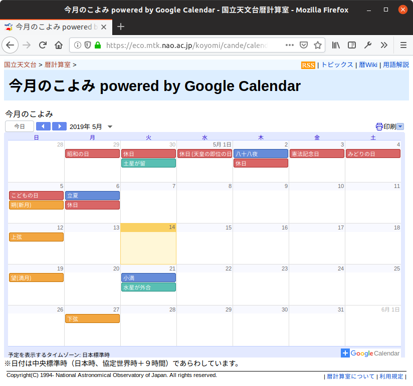

カレンダーに祝日を入れたいなら国立天文台へ行けばいいじゃない

前回のネタは個人的に色々と不本意だったので，今回は軽い小ネタで。
よく考えたらこの記事が今年初めての天文ネタだよ orz
という記事を見かけたのだが，日本の祝日は毎年国立天文台で発表してるんだから国立天文台のデータを使えばいいじゃない，と思ったり。
日本の暦は国立天文台の暦計算室で見ることができる。 こんな感じのページ。

しかも Google カレンダーへインポート可能で，上のページの「＋Google Calendar」の部分をクリックすれば自身の Google カレンダーにインポートできる。
祝日だけでなく二十四節気や朔望月，あるいは日食・月食といった情報が取得できる。 必要に応じてオン・オフを切り替えればいいだろう。
なお，上記データで見れるのは「祝日および休日」で「祭日」のデータはない。 つか，祭日は国家が規定するものではないので，あるわけないのだが。 祭日が知りたければ高島暦とかを購入することをオススメする（笑）
ちなみに国立天文台では毎年2月1日に翌年の「暦要項」が官報で発表される。
日本の暦はこれが国家公式データである。
ブックマーク
- ソフトウェア :: 六曜カレンダー - 公益財団法人 禅文化研究所 : Google カレンダーにインポート可能
参考図書

- 令和2年神宮館高島暦
- 神宮館編集部 (著)
- 神宮館 2019-08-01 (Release 2019-09-19)
- Kindle版
- B07Y3FGB99 (ASIN)
Kindle 版があるのか。思ったよりデジタル化が進んでるんだな（笑） 昔は親が毎年買っていたのだが近年は実家で見かけないな。

- 天体の位置計算
- 長沢 工 (著)
- 地人書館 1985-09-01
- 単行本
- 4805202254 (ASIN), 9784805202258 (EAN), 4805202254 (ISBN)
- 評価
B1950.0 分点から J2000.0 分点への過渡期に書かれた本なので情報が古いものもあるが，基本的な内容は位置天文学の教科書として充分通用する。

- 天体物理学
- Arnab Rai Choudhuri (著), 森 正樹 (翻訳)
- 森北出版 2019-05-28
- 単行本
- 4627275110 (ASIN), 9784627275119 (EAN), 4627275110 (ISBN)
- 評価
興味本位で買うにはちょっとビビる値段なので図書館で借りて読んでいたが，やっぱり手元に置いておきたいのでエイヤで買った。まえがきによると，この手のタイプの教科書はあまりないらしい。内容は非常に堅実で分かりやすい。理系の学部生レベルなら問題なく読めるかな。